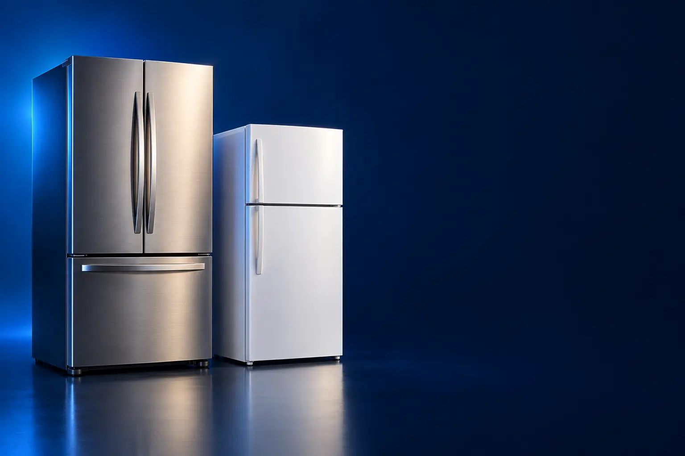

COMPACTA (1 OU 2 PESSOAS)
Melhor geladeira compacta custo-benefício para kitnet e casal
Para kitnet, casal ou segundo refrigerador: ocupa pouco e gasta pouco.

Melhor custo-benefício compactaElectrolux 240 L 1 porta
CURADORIA TECHAPROVADO · 2026
Geladeira se escolhe pelo tamanho da família e pelo espaço da cozinha. Separamos 10 modelos em 3 perfis e dizemos para quem cada um vale a pena.

NOSSA LEITURA
Anote largura, altura e profundidade do espaço e da porta de entrada da casa. Depois escolha pela família: 1 ou 2 pessoas, até 300 L; 3 a 4, cerca de 375 L; 5 ou mais, a partir de 430 L.
COMECE POR AQUI
COMPACTA (1 OU 2 PESSOAS)
Para kitnet, casal ou segundo refrigerador: ocupa pouco e gasta pouco.
DUPLEX FROST FREE (FAMÍLIA)
Duas portas, freezer em cima e degelo automático: o padrão da família.

INVERSE, SIDE BY SIDE E FRENCH DOOR
Refrigerador na altura dos olhos e mais espaço para família grande.

A FICHA, TRADUZIDA
01 - CAPACIDADE
A capacidade total soma refrigerador e freezer. A ficha costuma separar os dois, e é o tamanho do freezer que mais varia entre modelos parecidos.
Uma referência prática: 1 ou 2 pessoas, até 300 litros; 3 ou 4 pessoas, cerca de 375 litros; 5 ou mais, a partir de 430 litros. Quem congela marmitas precisa de freezer maior.
Geladeira grande demais gasta mais energia vazia. Escolha pelo uso real, não pelo maior número.
02 - DEGELO
Frost free não forma gelo nas paredes: nunca precisa descongelar. Cycle defrost descongela o refrigerador sozinho, mas o freezer pede degelo 1 ou 2 vezes por ano. Manual exige desligar e descongelar.
Para quem não quer trabalho, frost free. Para um segundo refrigerador de bebidas, degelo manual basta.
Frost free resseca um pouco mais os alimentos expostos: guarde verduras na gaveta e restos de comida em potes fechados.
03 - INVERTER
O compressor inverter ajusta a velocidade em vez de ligar e desligar o tempo todo. Resultado: temperatura mais estável, menos barulho e conta de luz menor.
A economia, de 30% a 42% segundo os fabricantes, compensa o preço maior ao longo dos anos, porque a geladeira fica ligada 24 horas.
Confira o selo Procel e a classificação de eficiência (A+++ é a melhor) na etiqueta do Inmetro.
04 - VOLTAGEM
A maioria das geladeiras é de uma voltagem só, e cada versão tem um anúncio separado. Ligar na voltagem errada pode queimar o compressor e anular a garantia.
Nesta lista indicamos a voltagem de cada link. Se a sua tomada é de outra voltagem, procure a outra versão no anúncio.
Modelos bivolt, como a Electrolux IT70S, funcionam nas duas e evitam o erro.
05 - MEDIDAS
Além do espaço na cozinha, deixe alguns centímetros de folga atrás e dos lados para o ar circular. Sem folga, ela gasta mais e esquenta.
Meça a porta de entrada, o elevador e o corredor. Side by side e french door costumam ter mais de 80 cm de largura.
Veja para que lado a porta abre: muitas são reversíveis, mas não todas.
A CURADORIA EM DETALHE
10 modelos da pesquisa
PERFIL · 3 MODELOS, DA ENTRADA AO TOP DE LINHA
Para quem mora sozinho, em casal ou precisa de um segundo refrigerador, uma geladeira de 1 porta ou um frigobar resolvem ocupando pouco espaço. A diferença está no degelo e no tamanho do congelador.

COMPACTA · ENTRADA 1 de 3
122 L · controle de -2 °C a 10 °C · A+++
Ver preço na AmazonPOR DENTRO DA ESCOLHA
Frigobar de 122 litros com ajuste de temperatura entre -2 °C e 10 °C, compartimento Cold Zone para gelar rápido, porta reversível e eficiência A+++.
Um dos maiores frigobares da lista, com selo A+++ de consumo.
| Capacidade | 122 L |
|---|---|
| Degelo | Manual |
| Eficiência | A+++ |
Fonte: ficha e descrição do anúncio, conferidas em 02/11/2026. Dados informados pelo fabricante.
COMPACTA · CUSTO-BENEFÍCIO 2 de 3
Melhor custo-benefício compacta
214 L + 26 L de congelador · degelo por botão · 110 V
Ver preço na AmazonPOR DENTRO DA ESCOLHA
Geladeira de 1 porta com 214 litros de refrigerador e 26 de congelador, degelo prático por botão (sem desligar a geladeira) e controle de temperatura externo.
São 214 litros de refrigerador e 26 de congelador, tamanho certo para quem mora sozinho ou em casal. O degelo por botão evita desligar a geladeira para descongelar, e o controle de temperatura fica do lado de fora. Atenção: é 110 V.
| Capacidade | 240 L (26 L de congelador) |
|---|---|
| Degelo | Por botão |
| Voltagem | 110 V |
Fonte: ficha e descrição do anúncio, conferidas em 02/11/2026. Dados informados pelo fabricante.

COMPACTA · TOP DE LINHA 3 de 3
Top de linha compacta
Frost free · 295 L + 47 L · gavetão hortifrúti · 220 V
Ver preço na AmazonPOR DENTRO DA ESCOLHA
Geladeira de 1 porta frost free, que não forma gelo nas paredes: 295 litros de refrigerador, congelador de 47 litros, gavetão para hortifrúti e controle eletrônico externo.
O degrau sobre a 240 L é o frost free e o congelador quase duas vezes maior.
| Capacidade | 342 L (47 L de congelador) |
|---|---|
| Degelo | Frost free |
| Voltagem | 220 V |
Fonte: ficha e descrição do anúncio, conferidas em 02/11/2026. Dados informados pelo fabricante.
PERFIL · 4 MODELOS, DA ENTRADA AO TOP DE LINHA
A duplex frost free é a geladeira mais comum nas casas brasileiras: freezer em cima, refrigerador embaixo e degelo automático. Para família de 3 a 5 pessoas, de 375 a 480 litros dão conta.
DUPLEX · CUSTO-BENEFÍCIO 1 de 4
Melhor custo-benefício duplex
288 L + 86 L · Fresh Zone extrafrio · 220 V
Ver preço na AmazonPOR DENTRO DA ESCOLHA
Duplex frost free com 288 litros de refrigerador e 86 de freezer, compartimento extrafrio Fresh Zone para bebidas, frios e laticínios.
Marca tradicional, freezer de bom tamanho e o melhor preço entre as duplex frost free que passaram nos filtros.
| Capacidade | 375 L (86 L de freezer) |
|---|---|
| Degelo | Frost free |
| Voltagem | 220 V |
Fonte: ficha e descrição do anúncio, conferidas em 02/11/2026. Dados informados pelo fabricante.
DUPLEX · INTERMEDIÁRIO 2 de 4
AutoSense · 431 L · Inox Look · 127 V
Ver preço na AmazonPOR DENTRO DA ESCOLHA
Duplex frost free de 431 litros com tecnologia AutoSense, que ajusta a temperatura sozinha conforme o uso para conservar melhor os alimentos, gaveta HortiNatura para frutas e verduras e IceMax para gelo. Acabamento Inox Look.
O degrau sobre a Brastemp é a capacidade maior e o controle automático de temperatura.
| Capacidade | 431 L |
|---|---|
| Controle | AutoSense |
| Acabamento | Inox Look |
| Voltagem | 127 V |
Fonte: ficha e descrição do anúncio, conferidas em 08/11/2026. Dados informados pelo fabricante.

DUPLEX · AVANÇADO 3 de 4
Top de linha duplex
Inverter · AutoSense · SmartBivolt · inox
Ver preço na AmazonPOR DENTRO DA ESCOLHA
Duplex de 480 litros com compressor inverter (temperatura mais estável e consumo menor), AutoSense, gaveta HortiNatura que conserva frutas e verduras por até 2 vezes mais tempo e SmartBivolt, que funciona em 127 V ou 220 V.
O bivolt é raro em geladeira e evita erro na compra e na mudança de casa.
| Capacidade | 480 L |
|---|---|
| Compressor | Inverter |
| Voltagem | Bivolt |
| Extras | AutoSense, HortiNatura |
Fonte: ficha e descrição do anúncio, conferidas em 02/11/2026. Dados informados pelo fabricante.

DUPLEX · ALTERNATIVA 4 de 4
Outro caminho: 3 portas
3 portas · inverter · filtro TasteGuard · 127 V
Ver preço na AmazonPOR DENTRO DA ESCOLHA
Geladeira de 480 litros com 3 portas, compressor inverter com até 30% de economia, AutoSense, gaveta HortiNatura e filtro TasteGuard que elimina odores.
Mesma capacidade da IT70S, em formato de 3 portas para organizar melhor.
| Capacidade | 480 L |
|---|---|
| Portas | 3 |
| Compressor | Inverter |
| Voltagem | 127 V |
Fonte: ficha e descrição do anúncio, conferidas em 02/11/2026. Dados informados pelo fabricante.
PERFIL · 3 MODELOS, DA ENTRADA AO TOP DE LINHA
Nas geladeiras inverse, o freezer fica embaixo e o refrigerador, que você abre mais vezes, fica na altura dos olhos. Side by side e french door têm portas lado a lado e mais capacidade, para famílias grandes e cozinhas amplas.

INVERSE E SXS · CUSTO-BENEFÍCIO 1 de 3
Melhor custo-benefício inverse
Freezer embaixo · inverter · até 42% de economia · 127 V
Ver preço na AmazonPOR DENTRO DA ESCOLHA
Inverse de 490 litros com freezer embaixo, compressor inverter com até 42% de economia de energia, AutoSense, prateleiras flexíveis FastAdapt e gaveta HortiNatura.
O melhor preço entre as inverse que passaram nos filtros.
| Formato | Inverse |
|---|---|
| Capacidade | 490 L |
| Compressor | Inverter |
| Voltagem | 127 V |
Fonte: ficha e descrição do anúncio, conferidas em 02/11/2026. Dados informados pelo fabricante.

INVERSE E SXS · ALTERNATIVA 2 de 3
Outro caminho: side by side
Side by side · 145 L de freezer · Eco Inverter · 127 V
Ver preço na AmazonPOR DENTRO DA ESCOLHA
Side by side com 289 litros de refrigerador e 145 de freezer, compressor Eco Inverter mais silencioso e econômico, frost free e Smart Cooling.
Custa quase o mesmo que a inverse e troca o foco: muito mais freezer.
| Formato | Side by side |
|---|---|
| Capacidade | 434 L (145 L de freezer) |
| Compressor | Eco Inverter |
| Voltagem | 127 V |
Fonte: ficha e descrição do anúncio, conferidas em 02/11/2026. Dados informados pelo fabricante.

INVERSE E SXS · TOP DE LINHA 3 de 3
Top de linha da lista
French door · inverter A+++ · inox · 110 V
Ver preço na AmazonPOR DENTRO DA ESCOLHA
French door de 554 litros, com duas portas no refrigerador e freezer em gaveta embaixo, compressor inverter A+++ com até 30% de economia e acabamento inox.
É a maior e mais completa da lista. Para a maioria das famílias, a inverse de 490 L já sobra.
| Formato | French door |
|---|---|
| Capacidade | 554 L |
| Compressor | Inverter A+++ |
| Voltagem | 110 V |
Fonte: ficha e descrição do anúncio, conferidas em 02/11/2026. Dados informados pelo fabricante.
Nenhum modelo encontrado. Tente outro termo ou volte para Todos.
LADO A LADO
| Modelo | Perfil | Posição | Capacidade | Destaque |
|---|---|---|---|---|
| Electrolux Frigobar EM120 122 L | Compacta | Entrada | 122 L | 122 L · controle de -2 °C a 10 °C · A+++ |
| Electrolux 240 L 1 porta | Compacta | Custo-benefício | 240 L (26 L de congelador) | 214 L + 26 L de congelador · degelo por botão · 110 V |
| Consul Frost Free 342 L 1 porta (CRB39AB) | Compacta | Top de linha | 342 L (47 L de congelador) | Frost free · 295 L + 47 L · gavetão hortifrúti · 220 V |
| Brastemp Frost Free 375 L Duplex | Duplex | Custo-benefício | 375 L (86 L de freezer) | 288 L + 86 L · Fresh Zone extrafrio · 220 V |
| Electrolux Frost Free 431 L Efficient AutoSense Inox Look (TF70S) | Duplex | Intermediário | 431 L | AutoSense · 431 L · Inox Look · 127 V |
| Electrolux Frost Free Inverter 480 L (IT70S) | Duplex | Avançado | 480 L | Inverter · AutoSense · SmartBivolt · inox |
| Electrolux Inverter 480 L 3 portas (IM7S) | Duplex | Alternativa | 480 L | 3 portas · inverter · filtro TasteGuard · 127 V |
| Electrolux Inverse 490 L Efficient AutoSense (IB7) | Inverse e SxS | Custo-benefício | 490 L | Freezer embaixo · inverter · até 42% de economia · 127 V |
| Philco Side by Side 434 L (PRF535ID) | Inverse e SxS | Alternativa | 434 L (145 L de freezer) | Side by side · 145 L de freezer · Eco Inverter · 127 V |
| Brastemp French Door 554 L (BRO85AK) | Inverse e SxS | Top de linha | 554 L | French door · inverter A+++ · inox · 110 V |
CONSIDERAÇÕES FINAIS
Geladeiras costumam ter preços parecidos entre modelos próximos, por isso a escada tem menos degraus que em outras pesquisas. Em cada perfil ficaram os modelos que passaram nos nossos filtros de qualidade e vendedor.
A Brastemp Frost Free 375 L Duplex para família, e a Electrolux 240 L para quem mora sozinho ou em casal.
Sim, para quem vai usar por muitos anos: a economia na conta de luz compensa o preço maior.
Na inverse, o refrigerador fica na altura dos olhos, mais prático para quem abre muito. Na duplex, o freezer fica em cima e o preço é menor.
Uma duplex frost free de cerca de 375 a 430 litros.
Porque ele muda várias vezes por dia. O botão leva ao valor atualizado na loja.
TRANSPARÊNCIA EDITORIAL
Separamos as geladeiras pelo tamanho da família e pelo formato, e conferimos a voltagem de cada link. Cada modelo precisa responder com clareza "para quem ele é o certo".
Em cada perfil há modelos em faixas de preço diferentes, e cada degrau precisa entregar algo que o anterior não entrega. Dois modelos com a mesma proposta não entram juntos.
Ficha e especificações foram conferidas nos anúncios das lojas em 02/11/2026.
Os links de compra desta página são de afiliado: se você comprar por eles, o TechAprovado pode ganhar uma comissão, sem custo adicional para você. Isso não muda a ordem nem a escolha dos produtos.
📲 GUIAS E DICAS NO SEU FEED
Dicas práticas antes de comprar, em carrosséis e vídeos curtos, sempre com link para o guia completo.